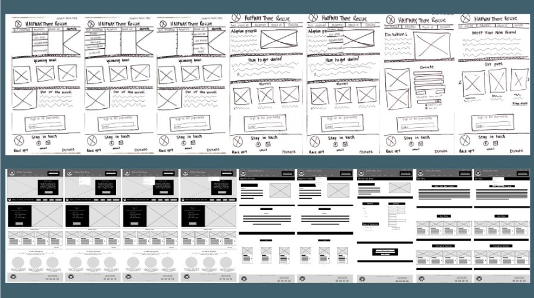

Halfway There Rescue
UI/UX Design Website Redesign
UI/UX Design Website Redesign
Nonprofit overview (January 2024- February 2024)
Why was a redesign needed ?
Starting with the basics

Defining the flow

Wireframing
After we completed our user flow, we then proceeded in creating our wireframes. we started with a low-fidelity prototype and further iteration to get a mid-fidelity prototype
Final UI